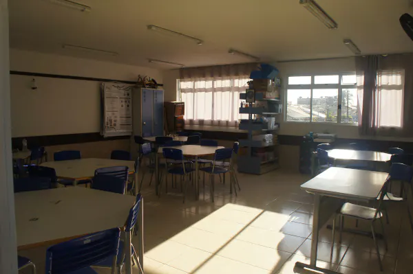
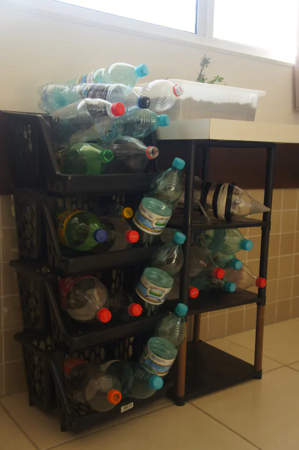
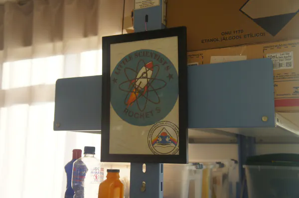

Clube de Ciências — Professora GabrielleSobre nós
Curiosidade que inspira descobertas.

Clube de Ciências
O Clube de Ciências é um espaço de curiosidade, investigação e troca de conhecimentos.
Conheça os clubes que fazem parte desta iniciativa no Colégio Estadual Euzébio da Mota.
Escolha um clube
Aprender, investigar e compartilhar.

Clube de Ciências — Professora Marlene